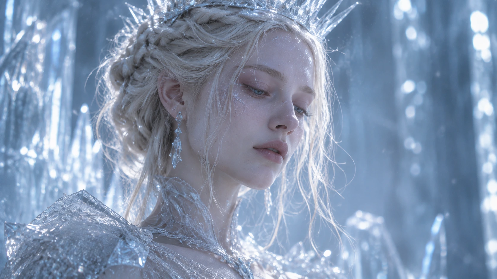
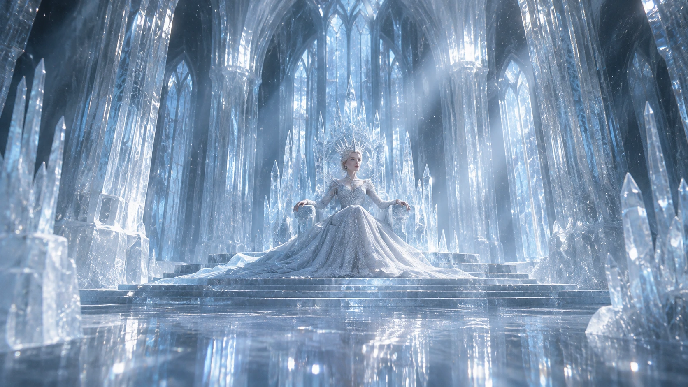
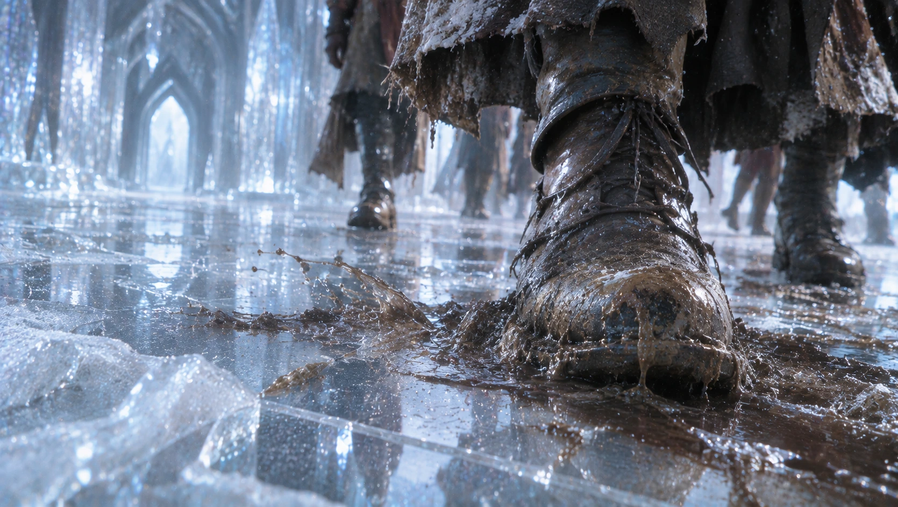
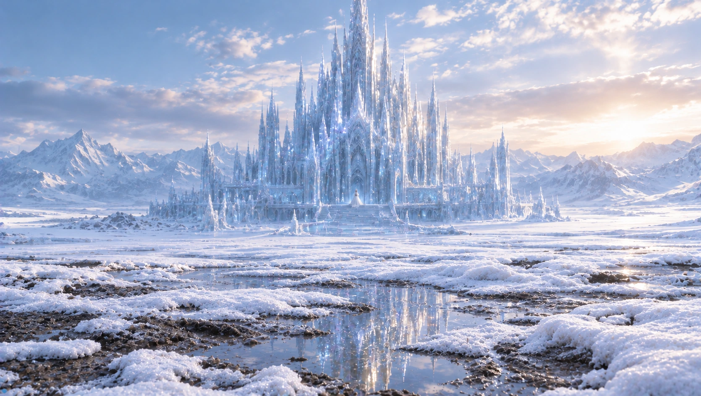
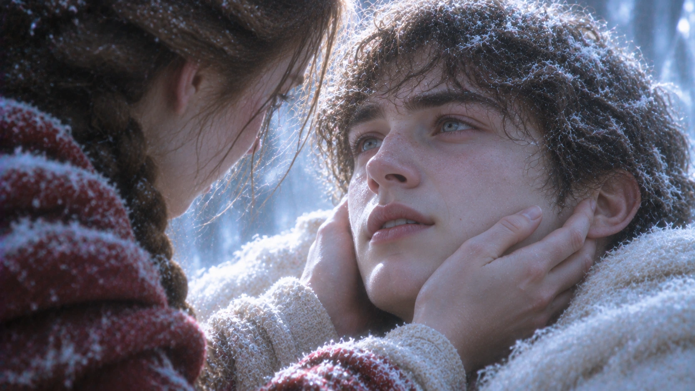
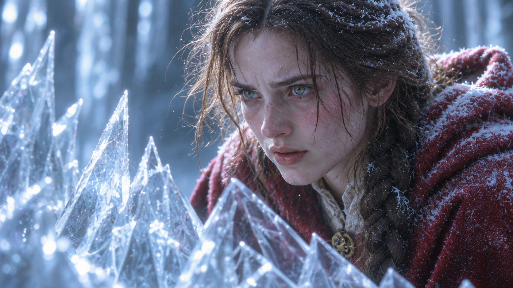

The Snow Queen 눈의 여왕 · 주인공
- Keyword
- 순수함 · 깨끗함 · 고요함 · 차분함
고요한 자비로 소년을 보호하려는 겨울 왕국의 주인. 인간의 뜨겁고 상처 주는 감정으로부터 소년을 지키기 위해 그를 자신의 왕국에 머물게 합니다.
Design · Film · Art

15 / Video · Drama
What if the Snow Queen was never the villain?
"냉혹한 것이 아니라, 상처로부터 지키기 위한 가장 순수한 사랑"
고전동화 『눈의 여왕』을 여왕의 시선으로 뒤집은 리버스 드라마
Trailer
주인공인 눈의 여왕을 중심으로, 고요한 겨울 왕국과 그 세계를 흔드는 감정의 시작을 담은 트레일러입니다.
Overview
The Snow Queen은 안데르센의 고전동화 『눈의 여왕』을 뒤집어 본 2~3부작 드라마입니다. 원작에서 소년을 빼앗아 간 차가운 악역이었던 눈의 여왕을, "만약 눈의 여왕이 '선'이었다면?"이라는 질문에서 다시 바라보았습니다.
이야기는 처음부터 끝까지 눈의 여왕의 시선으로 흘러갑니다. 정의라는 이름으로 겨울 세계에 들어온 사람들과, 그들이 가져온 뜨거운 감정이 고요한 세계를 어떻게 녹이고 더럽히는지를 따라가며, 선과 악의 경계가 보는 위치에 따라 달라질 수 있다는 것을 이야기합니다.
Reverse Point
눈은 여왕 그 자체입니다. 아무것도 섞이지 않은 순수함, 깨끗함, 소리 없는 고요함과 차분함을 상징합니다. 여왕의 세계는 감정이 멈춘, 상처받을 일 없는 평온의 공간입니다.
인간이 가져온 열기는 감정입니다. 눈이 녹으며 진득해지고, 질척해지고, 감정적으로 변하며 결국 더러워집니다. 따뜻함이 언제나 구원은 아니라는 것, 누군가에게는 침범일 수 있다는 것을 표현했습니다.
Story
네 개의 흐름으로 고요함에서 침범, 흔들림, 그리고 지워지지 않는 흔적까지를 따라갑니다.

어쩌다 눈의 세계로 오게 된 소년 카이는 여왕의 곁에서 처음으로 고요한 휴식을 얻습니다. 여왕은 소년을 다시 복잡하고 질척이는 인간들 틈으로 돌려보내지 않으려 합니다.

'정의'라는 이름의 사람들이 겨울 세계로 들어옵니다. 그들의 발자국과 열기에 눈이 녹고, 깨끗했던 얼음 바닥은 진흙과 함께 질척하게 물들어 갑니다.

소년을 구하러 온 소녀의 간절함 앞에서, 감정이 없던 여왕에게도 감정이 스며듭니다. 여왕은 끝내 소년을 붙잡지 않고 풀어 줍니다.

소년은 여왕을 원망하거나 두려워하지 않고, 안쓰럽고 고맙고 미안한 마음으로 시선을 나눈 채 떠납니다. 여왕은 다시 평온을 되찾고 싶지만, 한 번 녹았던 자리의 얼룩(감정)은 겨울 세계에 흔적으로 남습니다.
Character

고요한 자비로 소년을 보호하려는 겨울 왕국의 주인. 인간의 뜨겁고 상처 주는 감정으로부터 소년을 지키기 위해 그를 자신의 왕국에 머물게 합니다.

세상의 상처에 지쳐 여왕의 세계에서 처음으로 고요한 안식을 얻은 소년. 떠나는 순간에도 여왕을 탓하지 않고, 고마움과 미안함을 담아 마지막 시선을 건넵니다.

소년을 되찾기 위해 모든 추위를 뚫고 왕국으로 찾아온 소녀. 소년을 향한 뜨거운 마음이 오히려 여왕의 순수한 세계를 녹이고 침범하는 존재가 됩니다.
Direction
눈의 왕국 — 여왕의 공간
인간의 세계 — 열기와 오염
Board
기획 의도와 시퀀스 구성, 캐릭터와 세트·소품 디자인을 정리한 보드입니다. 클릭하면 크게 볼 수 있습니다.


Stills
고요한 왕국에서 침입, 흔들림, 그리고 남겨진 흔적까지 이야기의 흐름을 보여주는 주요 장면입니다.